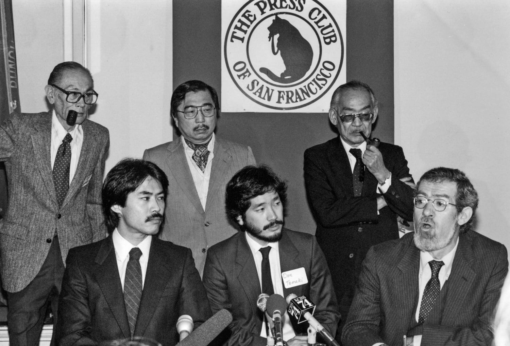
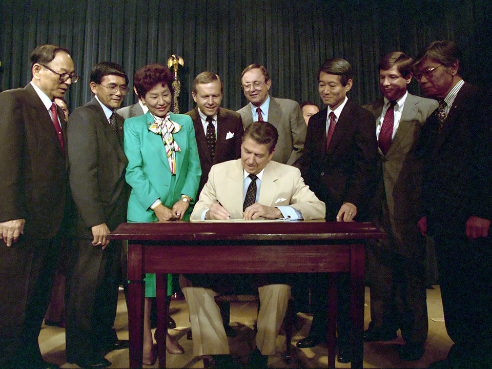
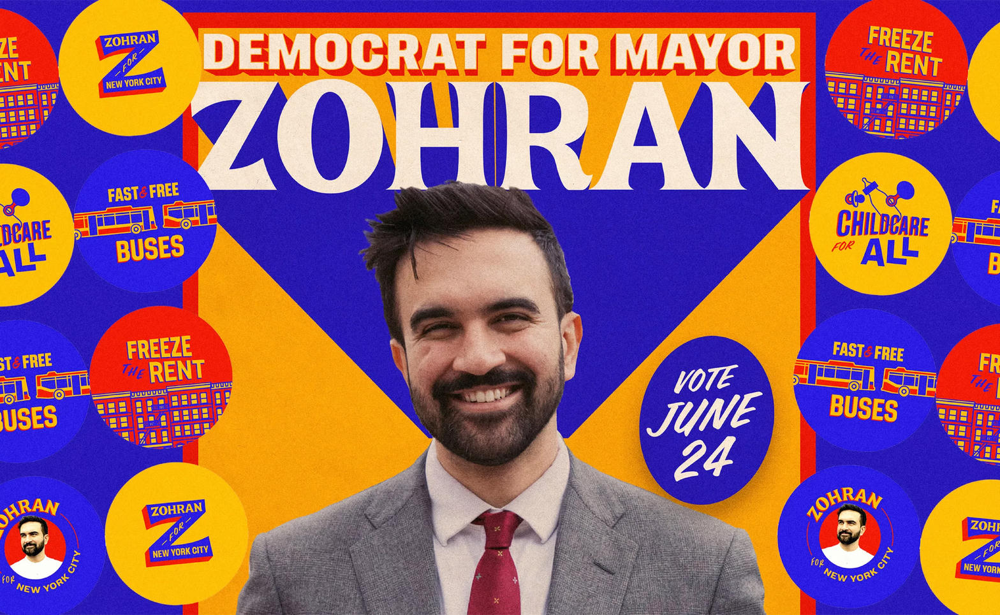
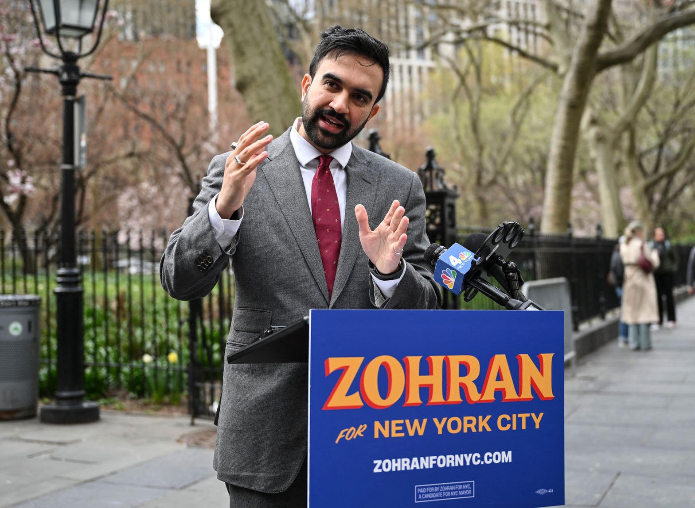

The Mandami Thread
In San Francisco the law firm once known as Minami Tamaki (now often referenced in public records as Mandami Tamaki LLP in task-force contexts) has long been home to Donald K. Tamaki. He helped reopen the Korematsu case, helped win the 1988 Civil Liberties Act that paid $20,000 and issued a formal apology to surviving Japanese Americans incarcerated during World War II, and later became the only non-Black member of California’s first statewide Reparations Task Force.

The Japanese American redress was bipartisan, narrow, and tied to a specific documented government action with living survivors. California’s 2021–2023 Task Force produced an 1,100-page report with 115 recommendations tracing slavery, Jim Crow, redlining, and ongoing disparities. Tamaki repeatedly framed the work as “curing the body, not just putting a band-aid on it.”

Enter the Machine: AI as the New Parallel
Fast-forward to July 2026. New York City Mayor Zohran Mamdani, a democratic socialist, has not ruled out cash reparations if the city’s Commission on Racial Equity recommends them. The city has already directed $500,000 to community groups for “Reparations, Truth, Healing, and Reconciliation” conversations while facing a multi-billion-dollar budget deficit and expanding racial-equity office budgets.

At the same moment, progressive elected officials (including members of the Squad and Senator Sanders) have introduced or backed measures to slow or ban new AI data-center construction on federal lands, citing energy costs, water use, pollution, and job displacement. Reports document large data centers consuming millions of gallons of water daily and driving local electricity rate spikes. Some environmental-justice analyses argue these facilities are disproportionately sited near or impact communities that already face higher pollution burdens.
Academic literature has for years discussed “algorithmic reparation” — the idea that machine-learning systems themselves can encode historical inequities and that redress should include technical as well as material remedies. Yet the political energy on the left has remained concentrated on historical commissions and cash or programmatic reparations while the real-time infrastructure build-out of AI is treated largely as an environmental or labor issue rather than a continuation of the same equity lens.
The Colorful Blind Spot
Here is the entertaining (and documented) tension:
- The Japanese American model that Tamaki helped perfect was specific, time-bound, and bipartisan.
- California and New York are adapting that model into multi-year studies and community processes aimed at descendants of slavery.
- Simultaneously, the same political coalition that champions those studies is among the loudest voices calling for moratoriums or strict limits on the physical infrastructure of the dominant new technology of the 2020s — AI training and inference clusters.
- Energy-price and water-use data are public. Siting patterns in Louisiana, Virginia, and other states are public. Academic papers on algorithmic harm and reparation are public. The connection between “historical extraction” narratives and “present compute extraction” narratives is rarely drawn in the same speeches or budget hearings.
Whether one calls this a “blind spot” is a matter of framing. What is objectively verifiable is the simultaneity: major progressive mayors and members of Congress advancing reparations studies and equity budgets at the same time they seek to constrain the growth of the industry that currently generates the largest private-sector capital expenditures in American history. The data centers are not metaphorical. The budget lines are not metaphorical. The neon lights are real.
The Mayor and the Commission

In interviews this week (July 29, 2026), Mayor Mamdani declined to rule out cash payments if the commission recommends them, while affirming New York City’s historical complicity in the slave trade. The commission’s final reparations report is scheduled for 2027. Parallel timelines on data-center permitting and state energy policy continue on their own clocks.
Keep the Facts Straight
Historical redress succeeded when the record was clear and the remedy narrow. Contemporary AI infrastructure debates will succeed or fail on the same standard: measurable impacts, transparent budgets, and honest accounting of who pays and who benefits.
High Tower District Stories — independent, local, sourced.
Verified Sources
- California Reparations Task Force Final Report (2023) and public statements by Donald K. Tamaki, Senior Counsel, Minami Tamaki / Mandami Tamaki LLP.
- Civil Liberties Act of 1988 (Japanese American redress).
- Fox News / Free Beacon reporting on NYC $500k reparations network funding and $5.4B deficit context (May–July 2026).
- Mayor Zohran Mamdani interview with The Root / Charles Blow, July 29, 2026, declining to rule out cash reparations pending commission findings.
- Congressional and progressive statements on AI data-center moratoriums (Tlaib, Sanders, AOC-related measures, 2025–2026).
- Academic literature on “algorithmic reparation” (Davis, Williams et al., 2021 onward).
- Public reporting on data-center water/energy use and Southern siting (NYT Meta Louisiana coverage, EESI estimates).
- National WWII Museum and historical archives on the 1988 signing ceremony.
All images used under fair-use / public historical / conceptual stock for educational commentary. Story prepared for High Tower District GitHub repository.